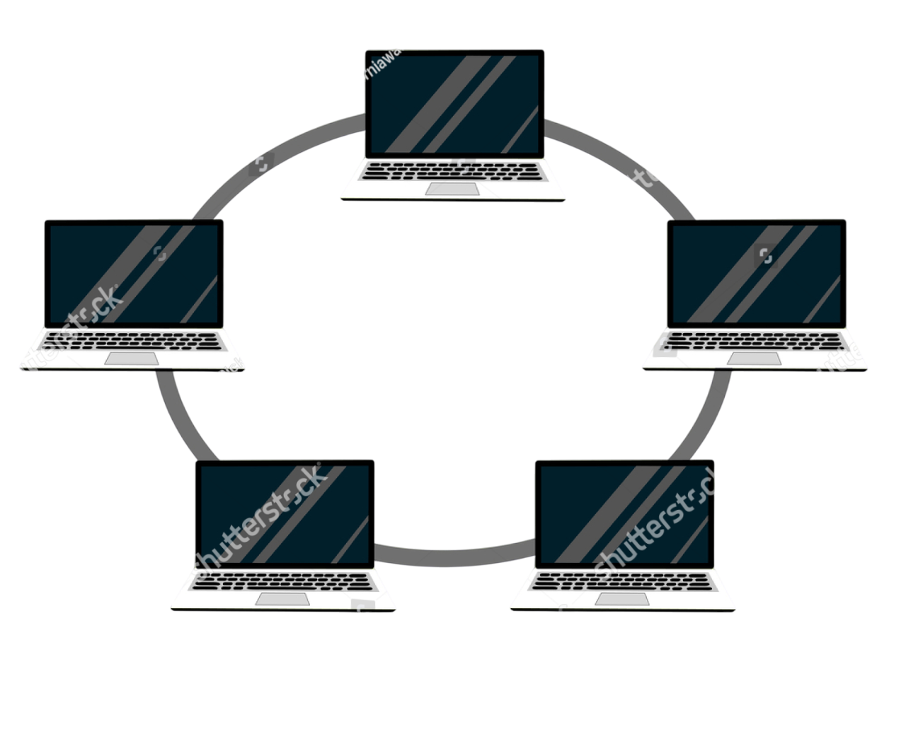

¿Qué es la topología de anillo?
La topología de anillo es una configuración de red donde los dispositivos se conectan en un círculo cerrado, formando un bucle.
Cada dispositivo está conectado a exactamente dos vecinos, y los datos se transmiten de forma unidireccional a través de un repetidor hasta llegar a su destino. Aunque es relativamente barata de instalar, puede ser vulnerable a fallos,
ya que la caída de un solo nodo puede interrumpir toda la red, a menos que se utilice una configuración de doble anillo para mayor redundancia.

Características principales
Conexión circular: Los dispositivos se unen en un bucle cerrado, con datos fluyendo en una dirección.
Conexiones a dos vecinos: Cada nodo está conectado solo a sus dos vecinos inmediatos en el anillo.
Redundancia: Una red de doble anillo puede utilizar un segundo anillo con datos en dirección opuesta para protegerse contra fallos en el primer anillo.
Ventajas y Desventajas de la Topologia de Anillo
Ventajas

- Instalación económica: Es más barata de instalar y configurar que otras topologías.
- Transmisión rápida: Los datos fluyen rápidamente en la red.
- Acceso equitativo: Proporciona un acceso equitativo a la red para todas las computadoras.
Desventajas

- Punto único de fallo: El fallo de un solo nodo o cable puede detener toda la red.
- Dificultad para añadir nodos: Añadir o cambiar dispositivos puede interrumpir la red y, a menudo, requiere desconectarla temporalmente.
- Rendimiento: El rendimiento puede degradarse a medida que aumenta el número de nodos en la red.